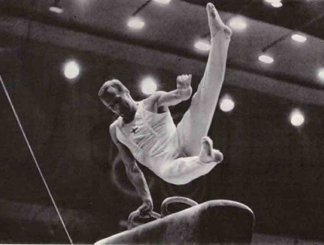

Olli Laiho (FIN)
1968 Olympic PH Silver
Medalist

Medal Total
Olympic Games: 1
Silver
European Championships: 1 Bronze
Laiho was born on February 18, 1943. In December 2004 he was awarded a Pro Sport Recognition Award by Finland's Ministry of Education. He died on May 31, 2010 in Helsinki.
Competition Results
1962
World Championships: 57th AA
1964
Olympic Games: 8th Team, 26th AA
1965
European Championships: 10th AA, 3rd PH
1966
FIN-USSR Dual Meet: 2nd Team, 2nd AA
World Championships: 33rd AA, 6th PH
1967
European Championships: 21st AA, 5th FX
Scandinavian Championships: 2nd AA
1968
Olympic Games: 10th Team, 41st AA, 2nd PH
This page was created on April 11, 2020.
© Gymn Forum